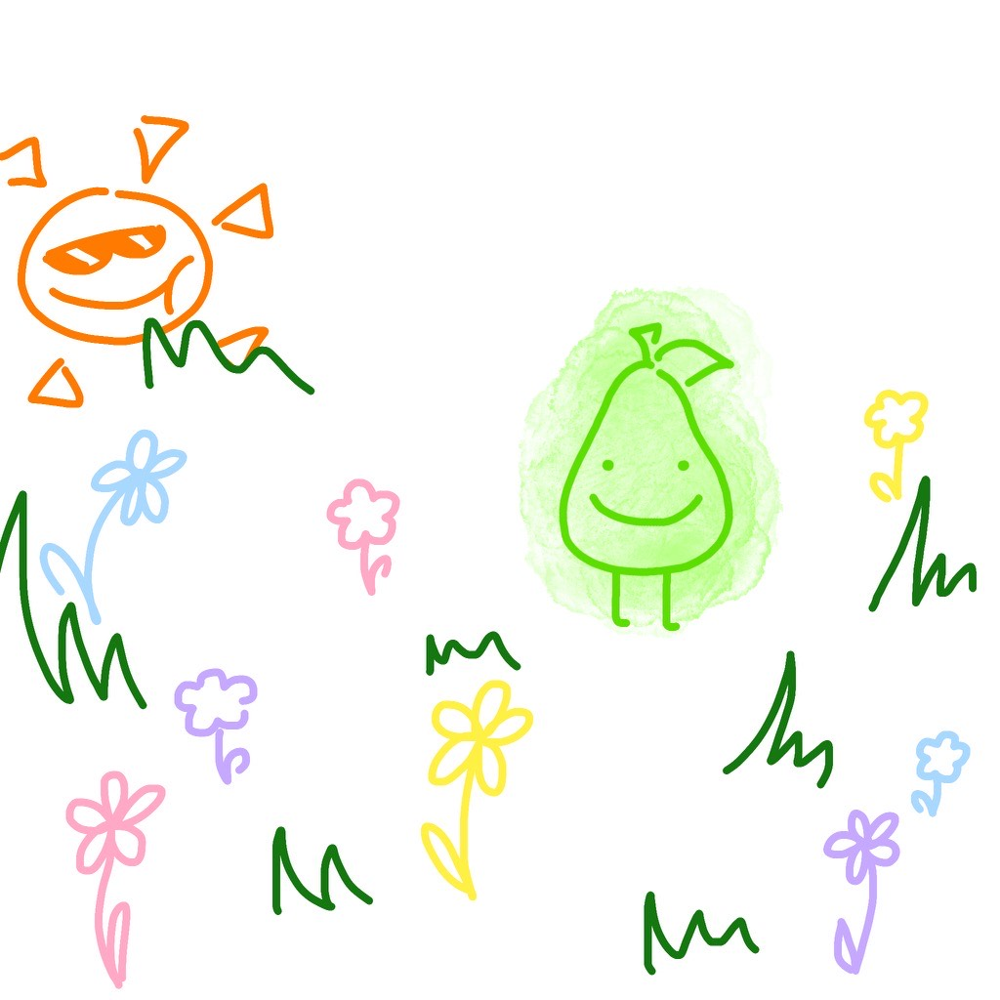
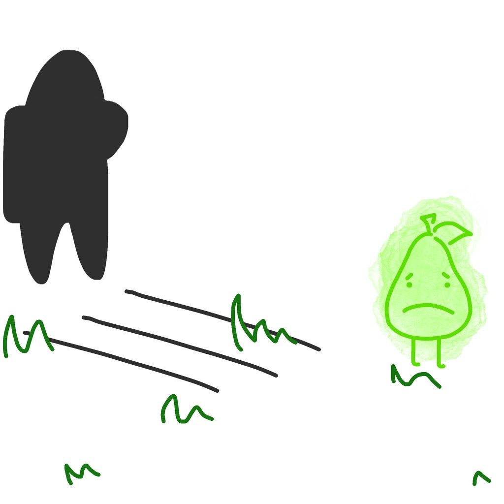
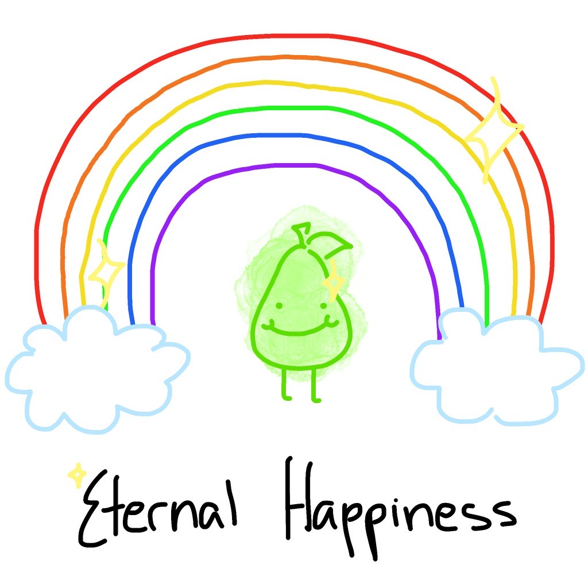
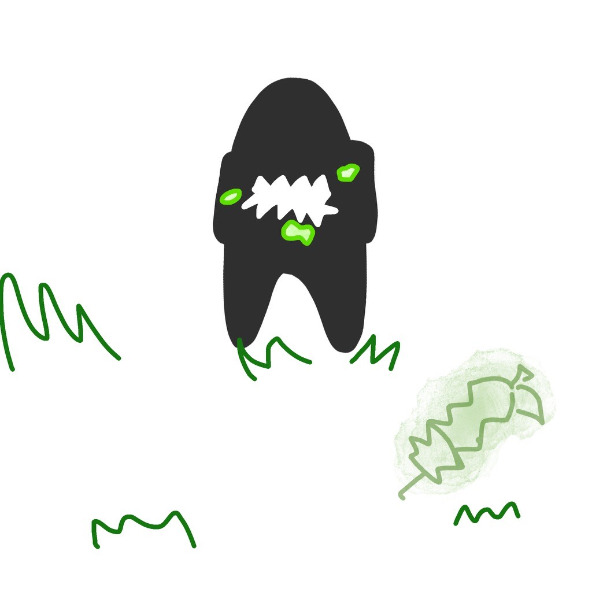
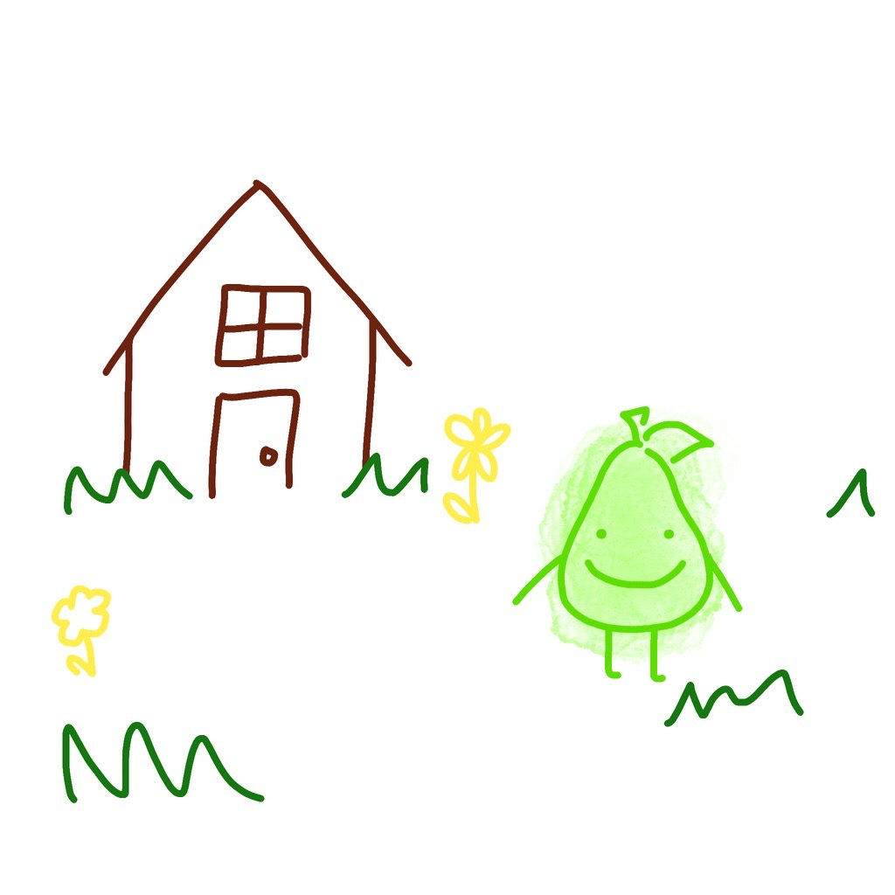
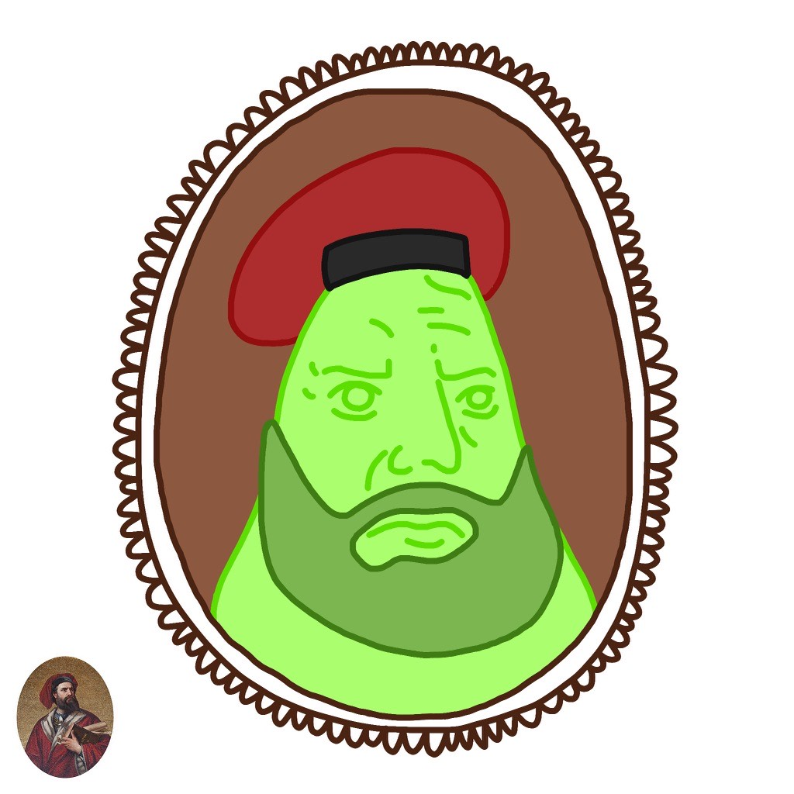
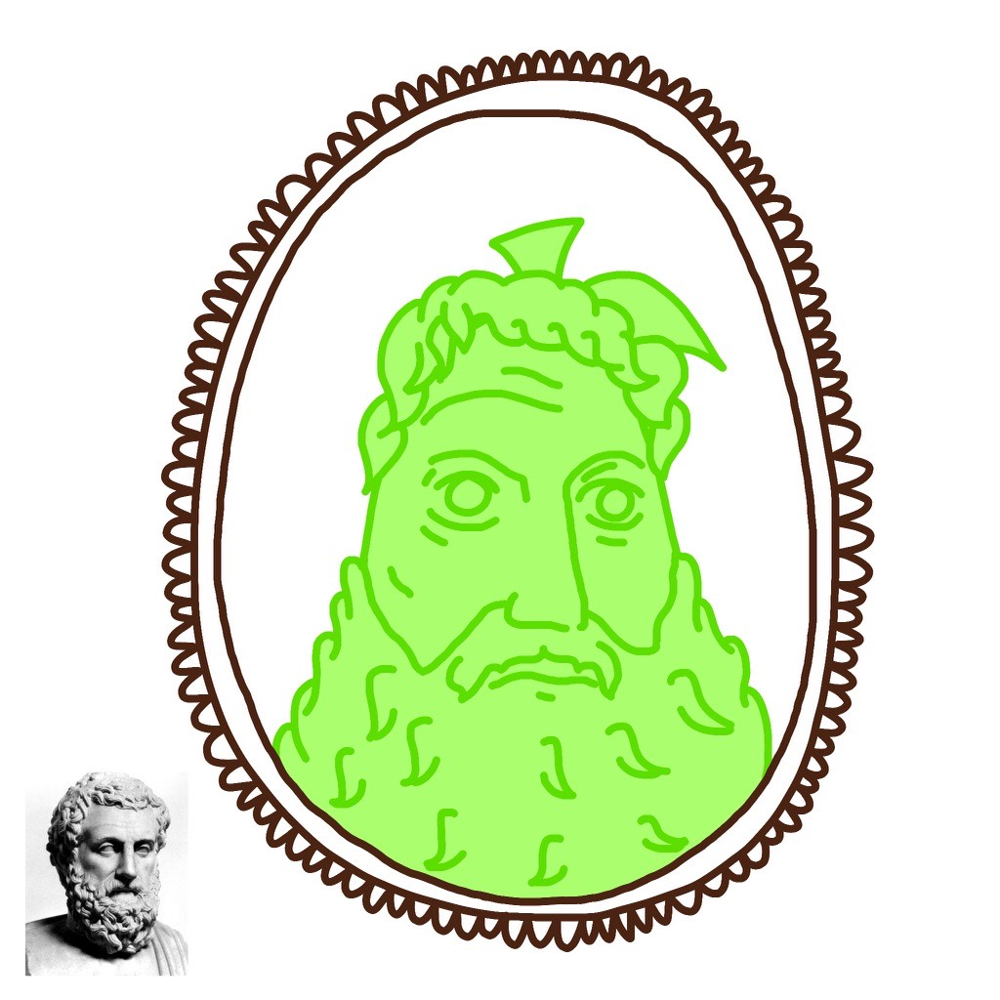
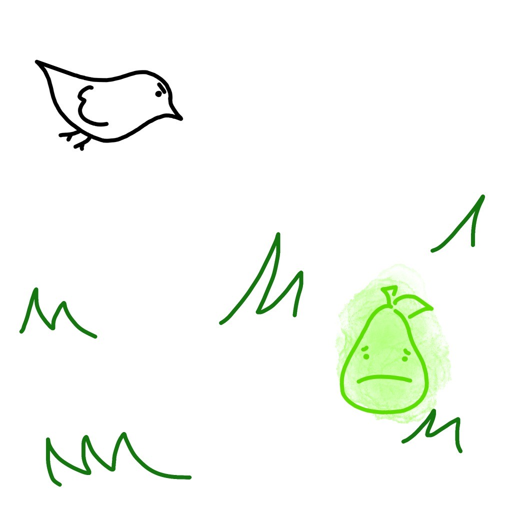
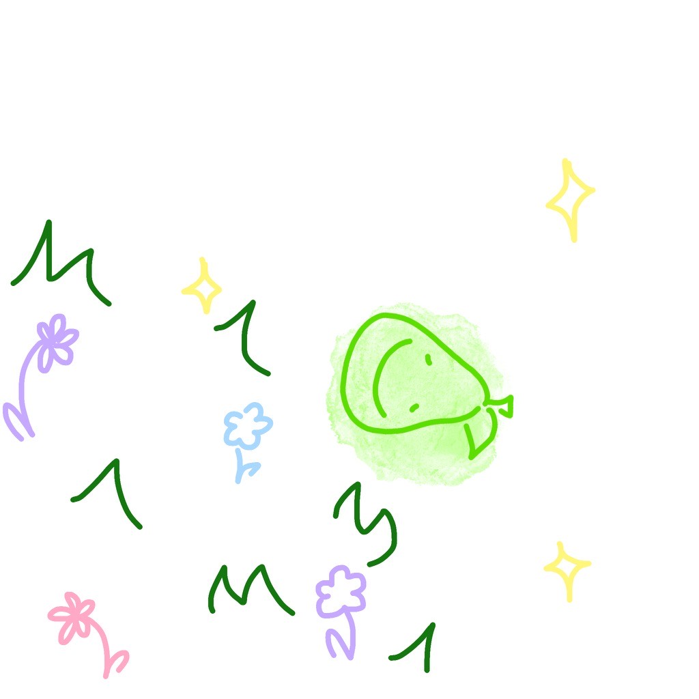
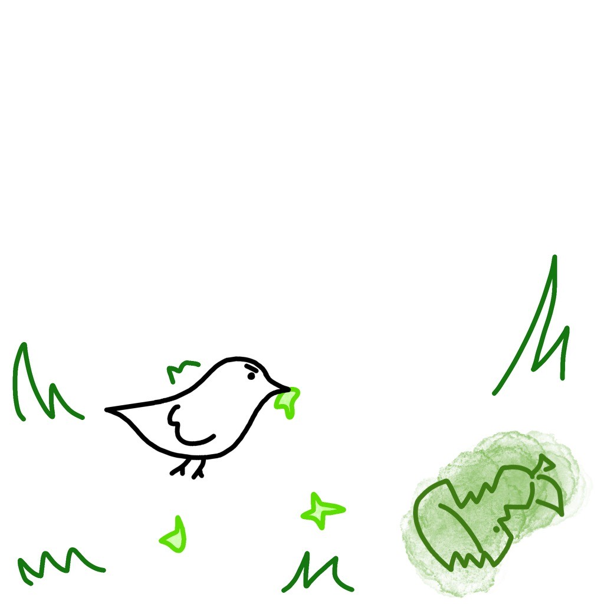

You are a succulent green pear that has just fallen from a fruitful pear tree. Long green grass surrounds you. What ever shall you do?

You come across a field of flowers. You pause, taking in the scenery. The sun begins to set as you admire the beauty of this world. What do you decide to do?

As you extend your journey forthward, you can’t help but notice an ominous being watching each step you make. You look behind you. A shadow appears. You, the succulent green pear with legs, freeze in fear. What will you do?

You are able to escape your fate, leaving everything behind. You spend the rest of your days as a succulent green pear, eventually leaving this world satisfied.

The figure slowly gets closer to you. It picks you up and bites into your succulent pear flesh. This is the end. Nothing is left behind except the core of a slightly less succulent green pear. Quickly decomposing, no evidence of the incident remains.

You've made it through the night! You feel accomplished, especially with your freshly-grown arms. It's just you, the succulent green pear, against the big wide world. You take some time to appreciate your existence before continuing your journey. What would you like to do?

Years pass and you actually become Marco Polo if he were a succulent green pear. Documenting your journeys, you travel the world and contribute to the development of pear-kind.

You actually become Aristotle but for succulent green pears. Decorated and loved by fellow succulent green pears, you are finally able to rest.

A bird comes flying by! Its eyes look at you. It’s hungry for a succulent green pear. But you don’t have any legs!!! You, the succulent green pear, begin to panic. What will you do?

You roll down the hill you conveniently fell from at the beginning of the story, escaping the wrath of the pear-hungry bird. The world seems peaceful, serene. You live out the rest of your days as a limbless pear in bliss–rolling in meadows, forests, and flower fields.

The bird swoops down, evil radiating from its being. Scraps of you get thrown to the side as it feasts on your corpse. You begin to decompose and return to the earth you were once made from.